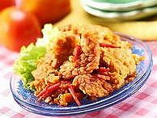

Sambal Tempe Penyet

Bahan-bahan :
- 250 gram tempe
- 4 sendok makan air
- 3 sendok makan kecap manis
- Minyak goreng secukupnya
- 3 siung bawang putih, haluskan
- 1 sendok teh garam
- 1 sendok teh ketumbar bubuk
Bahan bumbu halus:
- 1 sendok teh gula pasir
- 10 buahcabai rawit merah, digoreng
- 10 butir bawang merah, digoreng
- 4 siung bawang putih, digoreng
- 1 sendok teh kencur
- 1 sendok teh terasi bakar
- 1 sendok teh garam
Cara membuat :
- Rendam tempe selama 1 jam dalam campuran bawang putih, ketumbar, garam, dan air.
- Panaskan minyak secukupnya, lalu goreng tempe sampai matang. Angkat dan segera tiriskan.
- Panaskan sedikit minyak sisa menggoreng tempe, tumis bumbu halus sampai matang, dan beraroma harum. Angkat.
- Campurkan tumisan bumbu halus dengan tempe. Penyet tempe kemudian beri minyak sisa goreng tempe, dan kecap wijen. Sajikan hangat.